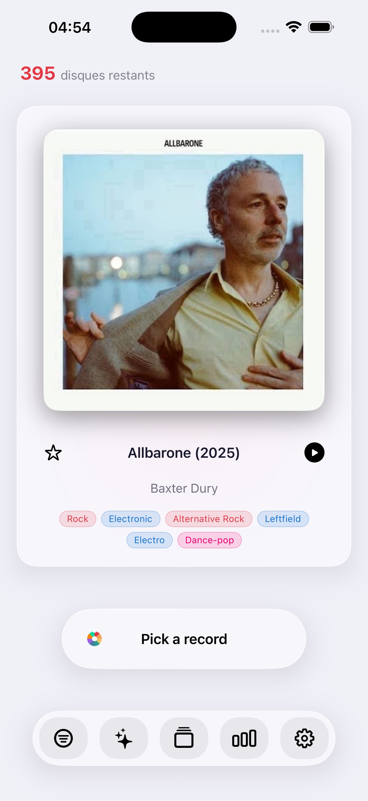
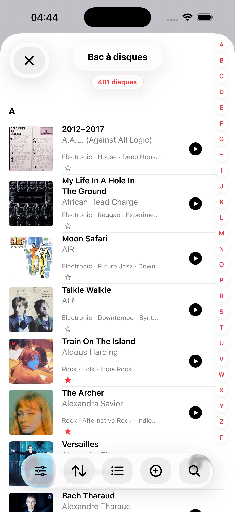
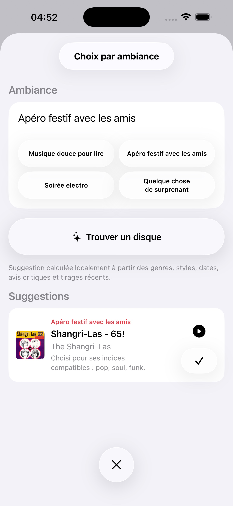

Tirage équitable
Favorisez les disques moins écoutés, filtrez par année, genre, format, vitesse ou favoris, puis balayez la pochette pour tirer ou annuler.
Passez le bon disque.
Passez le bon disque. Redécouvrez votre collection sur iPhone, iPad, Apple Watch et Mac, avec un tirage équitable, Mood Pick, iCloud et des outils pensés pour les vrais collectionneurs.

À venir en 1.9
Une raison liée à l’actualité de redécouvrir un disque que tu possèdes déjà.
Disque du jour
Une raison liée à l’actualité de redécouvrir un disque que tu possèdes déjà.
À venir en 1.8
Record Picker 1.8 rend l’état de la collection préventif et directement exploitable.


Record Picker
Record Picker catalogue les vinyles, CD et albums favoris, puis propose le prochain disque à écouter selon vos filtres, vos favoris, vos exclusions et l'ambiance du moment.
Favorisez les disques moins écoutés, filtrez par année, genre, format, vitesse ou favoris, puis balayez la pochette pour tirer ou annuler.
Scan de code-barres, MusicBrainz, Discogs en secours, pochettes personnalisées, doublons, exclusions, souhaits et historique restent faciles à suivre.
Pochette à gauche, métadonnées complètes à droite, bouton Pick centré et barre d'outils flottante pour choisir sans friction.
Une étoile rouge remplace la pastille Favori dans le bac: un tap sur iPhone ou iPad suffit pour marquer ou retirer un favori.
App Store
Notes de version de Record Picker 1.8 et de l'app Mac native, désormais disponibles.
À venir en 1.9
Disponible dès maintenant
La page d'assistance répond rapidement aux questions sur l'import, les sauvegardes, les recherches externes, la confidentialité et le contact direct.
Ouvrir l'assistance
Import CSV, restauration de sauvegarde, scan de code-barres et ajout manuel pour commencer même avec une collection incomplète.
Sauvegardes, CSV et JSON lisibles restent déclenchés volontairement par l'utilisateur vers la destination de son choix.
MusicBrainz, Discogs et Cover Art Archive sont utilisés seulement quand une recherche ou un enrichissement est lancé.
Record Picker n'a pas de compte utilisateur, n'utilise pas de publicité, ne vend pas de données et ne fait pas tourner de serveur Record Picker pour stocker la collection.

Les albums ajoutés, importés, modifiés, favoris, exclus ou tirés sont stockés sur l'appareil. Cela peut inclure titres, artistes, informations de sortie, genres, styles, tags, notes, historique d'écoute, pochettes et métadonnées de collection.
Record Picker n'utilise pas de système de compte et ne téléverse pas votre collection vers un serveur Record Picker.
La collection, la liste de souhaits, l’historique de tirage, les pochettes personnalisées et les suppressions restaurables sont stockés sur l’appareil et peuvent être synchronisés dans votre base privée iCloud lorsque iCloud est activé pour l’app. Les exports restent déclenchés volontairement vers la destination choisie dans Fichiers, comme iCloud Drive ou OneDrive.
Record Picker peut utiliser l'appareil photo pour scanner un code-barres lorsque vous choisissez d'ajouter un album ainsi. Les images de l'appareil photo ne sont pas stockées ni partagées par Record Picker.
Le code-barres peut être envoyé à MusicBrainz; si MusicBrainz ne connaît pas la référence, Record Picker interroge Discogs pour préremplir la fiche quand l'édition est trouvée.
Quand vous lancez une recherche de métadonnées ou de pochette, Record Picker peut contacter des services externes comme MusicBrainz, Cover Art Archive ou Discogs.
Ces requêtes peuvent contenir les termes de recherche ou le code-barres fournis. Elles ne sont envoyées que lorsque vous lancez explicitement la recherche.
Les recherches de pochette passent par Cover Art Archive ou par une recherche manuelle choisie par l'utilisateur. Les images sélectionnées depuis Photos, Fichiers ou Internet restent sous votre contrôle.
Record Picker peut utiliser Apple Intelligence sur l'appareil, quand elle est disponible, pour suggérer des albums par ambiance. Si ces modèles ne sont pas disponibles, les suggestions sont calculées localement à partir des métadonnées, favoris, tags, genres, styles et tirages récents.
Record Picker n'utilise pas de fournisseur d'IA tiers et n'envoie pas votre collection à une IA cloud.
Les avis Internet ne sont jamais récupérés automatiquement. Les fonctions intelligentes restent déclenchées par l'utilisateur ou calculées sur l'appareil.
Si vous utilisez l'app Apple Watch, Record Picker peut synchroniser les informations essentielles de collection et de tirage entre l'iPhone et l'Apple Watch via les mécanismes Apple.
Le compagnon Watch peut afficher le disque tiré, lancer le tirage suivant, marquer un favori, annuler le dernier tirage et demander la lecture sur l'iPhone.
Record Picker peut vous laisser importer, exporter, sauvegarder ou restaurer des fichiers de collection. Ces fichiers sont créés, choisis et gérés par vous.
Record Picker n'utilise pas de suivi publicitaire et n'intègre pas de SDK publicitaire tiers.
Pour toute question sur cette politique de confidentialité, contactez support@recordpicker.app.
Aperçus
La capture iPhone complète la vue iPad de l'accueil, sans réutiliser la même image deux fois.



Guides vinyle
Trois guides courts répondent aux questions fréquentes des collectionneurs: quoi écouter maintenant, comment utiliser un tirage aléatoire utile, et comment garder une collection vivante.
Guide vinyle
Une méthode simple pour choisir le prochain vinyle à écouter sans tourner en rond devant sa collection.
Tirage aléatoire
Pourquoi un tirage aléatoire de vinyles fonctionne mieux quand il respecte les filtres, les favoris et les exclusions.
Collection vinyle
Un guide pratique pour cataloguer, enrichir, sauvegarder et redécouvrir une collection de vinyles avec Record Picker.
Pour une question sur l'app, l'import, les sauvegardes ou la confidentialité, utilisez le contact d'assistance public.